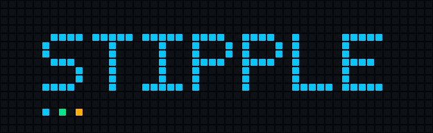

Open pixel firmware for the Ulanzi TC002.
Stipple replaces the application your clock shipped with. It owns the whole panel, runs apps you define, answers an HTTP and MQTT API on your own network, and talks to nothing else.
Put it on a device Browse the scripts
GPL-3.0. No cloud, no account, no telemetry. Everything above runs on a device with 36 MB of RAM.
Pre-release. Everything described here has run on
real hardware. The firmware-update endpoint has not yet been exercised
end to end, and https does not work on a TC002 — its
OpenSSL has every TLS version compiled out. Plain http on
your own network is fine.
The apps it ships with
Every animation on this page came off the real renderer, frame by frame, at the real 52 × 16 size. More in the script library.
832 pixels is the whole design
A 52 × 16 panel is about a third of a line of text. There is no room for a second font, a settings tree, or a mistake — so the firmware has one 5 × 7 font, one meaning per control, and a scene model you describe rather than draw.
- Frame budget
- dirty rendering, nothing allocates while drawing
- Memory
- bounded queues, bounded uploads, bounded icon storage
- Dependencies
- none — JSON, PNG, MQTT and the tests are all in-tree
- over a thousand, including pixel-exact comparison of rendered frames
One API, and it is yours
23 routes over HTTP same router answering MQTT so the two cannot drift. Apps are pushed to the device — it never reaches out, which is why it works with no internet at all.
curl -X POST 192.168.1.42/api/v1/notifications \
-H 'Content-Type: application/json' \
-d '{"text":"tea is ready","durationSeconds":10}'Installing it
You flash once, then update by uploading a file in the web UI. There is no image to download — one would contain Ulanzi's firmware — so the first step reads your own device and builds from that.
-
dev.ps1 captureReads a restore image off your device. Writes nothing to it. -
dev.ps1 imageBuilds an installable image from that capture. -
dev.ps1 usbPrepares a USB stick. Handles the three details that silently stop it working.
What is not finished
A status section that only lists wins is not a status section.
- Updating through the web UI is implemented but has not been run end to end on hardware.
- Nothing checks for new releases — you upload the file.
- DHCP lease renewal is tested in halves that have not yet met.
- Icons have a store, a budget and a renderer, but no library ships with it.
- Everything measured here comes from a single unit. Hardware revisions are an open question.